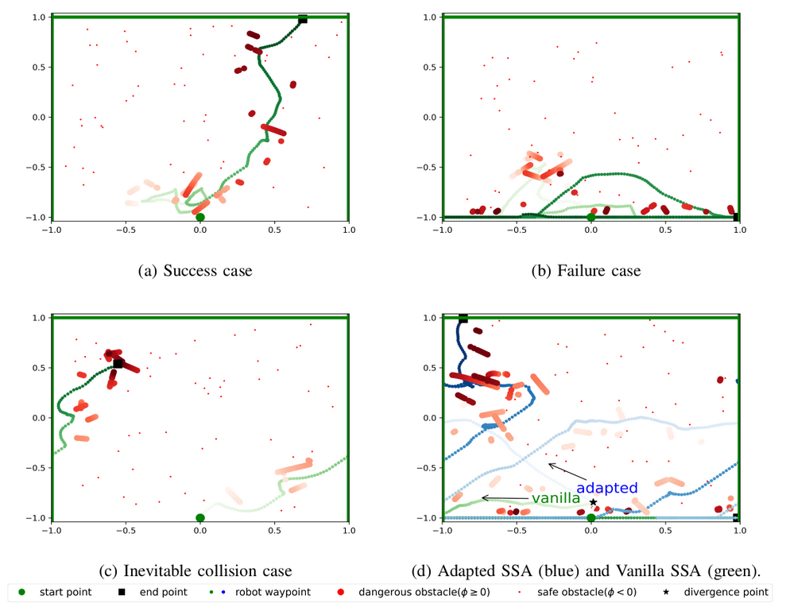
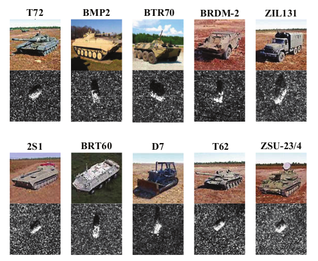

|
|
I'm currently a master student at GaTech advised by Professor Patricio A. Vela. I received a master degree in ECE from the Carnegie Mellon University, advised by Professor Changliu Liu. My work focuses on robot navigation, perception, safe control and reinforcement learning. I received a bachelor degree in Applied Mathematics from Beijing University of Chemical Technology and a double degree in Economics from Peking University. |
|  |
Safe and Sample efficient Reinforcement Learning for Clustered Dynamic Uncertain Environments Hongyi Chen, Changliu Liu IEEE Control System Letters, vol. 6, pp. 1928 - 1933, Dec. 2021 [Project page] [Paper] |
|  |
Slim and Efficient Neural Network Design for Resource-Constrained SAR Target Recognition Hongyi Chen, Fan Zhang, Bo Tang, Qiang Yin and Xian Sun Remote Sensing, vol. 10, pp. 1618, Oct. 2018 [Project page] [Paper] |
|
Safe and Sample efficient Reinforcement Learning for Clustered Dynamic Uncertain Environments Hongyi Chen, Changliu Liu IEEE Control System Letters, vol. 6, pp. 1928 - 1933, Dec. 2021 [Project page] [Paper] |